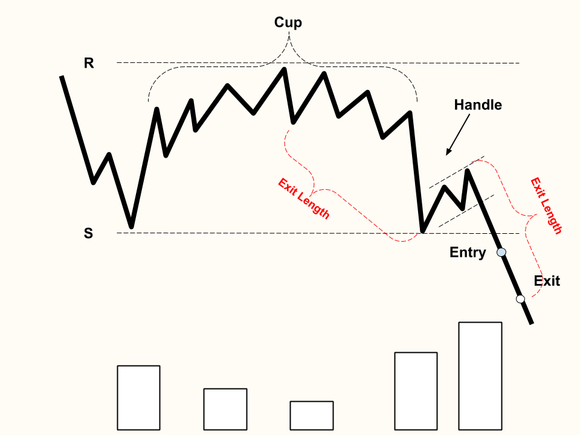

Cup and Handle
The cup-shaped trend line is formed by a price wave down, a stabilization period, then a rally approximately the same size as the prior price wave down.
The handle-shaped trend line is formed after the cup formation, with a price down drift.
This continuation pattern is an accurate predictor of a significant bullish breakout.
The handle has to be proportionally smaller than the cup, and should only indiciate a slight downward trend. If this is true, the breakout will be higher than the handle.
Volume follows the shape of the cup. The formation starts with low volume , then high volume as the left edge of the cup forms, then decreasing volume near the cup trough, and finally rising volume as the cup fully forms on right edge and nears breakout.
Breakout Confirmation: A close above the top of the handle trend line with high average
Exit: "Exit Length" distance away from handle

Inverted Cup and Handle
The inverted cup-shaped trend line is formed by a price wave up, a stabilization period, then a price wave down approximately the same size as the prior rally.
The handle-shaped trend line is formed after the cup formation, with a price up trend.
This continuation pattern is an accurate predictor of a significant bearish breakout.
The handle has to be proportionally smaller than the cup, and should only indiciate a slight upward trend. If this is true, the breakout will be lower than the handle.
Volume follows the shape of the cup. The formation starts with low volume , then high volume as the left edge of the cup forms, then decreasing volume near the cup trough, and finally rising volume as the cup fully forms on right edge and nears breakout.
Breakout Confirmation: A close below the bottom of the handle trend line with higher than average volume
Exit: "Exit Length" distance away from handle
Back to Homepage
Forward to Flags and Pennants